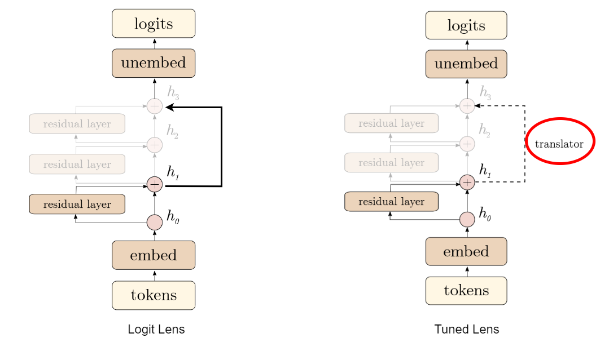
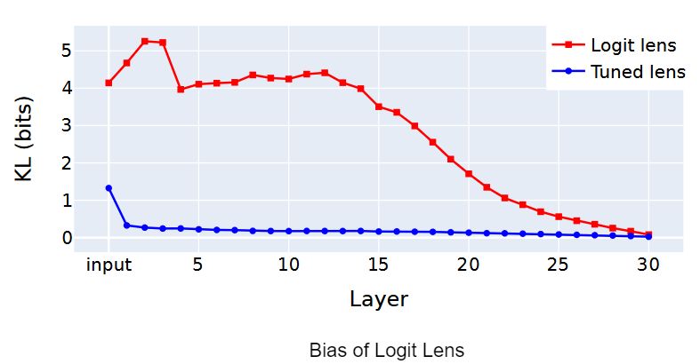

The launch of GPT-3 by Brown et al. (2020) marked a turning point, drawing widespread attention to the potential of Large Language Models (LLMs) and their applications such as ChatGPT, Copilot, etc. In parallel, diffusion models emerged as a powerful tool for synthesizing high-fidelity images as demonstrated by Ho et al.(2020) and Rombach et al. (2021). These new generative AI approaches led to a paradigm shift in scaling up models and data to extract more performance.
A study by Kaplan et al. highlights the significance of model size, dataset scale, and compute used in training. Their analysis indicates that larger models will continue to perform better. Regardless of their findings, we can clearly observe how these models have scaled up over time:
Although scaling up these approaches has led to significant capabilities and performance improvements, understanding the hidden representations and interpret how the model progresses toward generating its final output through all the intermediate layers.
For example, when applying linear probing from the previous chapter to a Large Language Model(LLM), the process would involve training a separate probe for each layer. Additionally, each probe would require a predefined set of labels (e.g., sentiment, part-of-speech tags etc.) to evaluate specific types of information the model might encode.
In other words, probing LLMs is challenging because it requires interpreting large, multi-dimensional representations, and the results may not reflect the model's internal working for its original tasks. To address these challenges, we need a mechanism to directly look at (👀 🔎) the hidden representations of a large scale generative AI model without any external probes.
This chapter will focus on some of these technqiues which offer a clearer view of how these large-scale model processes and represents information at each layer.
The first attempt on how to interpret the internal workings of a GPT-like model was introduced in an anonymous blog post Interpreting GPT: the logit lens — LessWrong. The idea was fairly straightforward. In GPT-2/GPT-3, predictions are formed in a series of steps across multiple Transformer layers. The Logit Lens "peeks 👀" at these intermediate stages by taking the intermediate outputs at each layer and projecting them directly into the vocabulary space. In other words, the intermediate output from different layers is passed through the same output head that the final layer uses to predict the next token as shown in the figure below. 
What makes this approach special is that, rather then relying on external probs, Logit lens uses its own prediction head to interpret the hidden representations. By doing so, we can easily track the evolution of the model's understanding at every processing stage. That being said, this first attemt had few limitations.
Belrose et al. highlighted three specific limitations of Logit Lens in their paper Eliciting Latent Predictions from Transformers with the Tuned Lens.

The x-axis represents the different layers of the neural network, and the y-axis represents the difference (in bits) between the output of the method and the final output of the model.